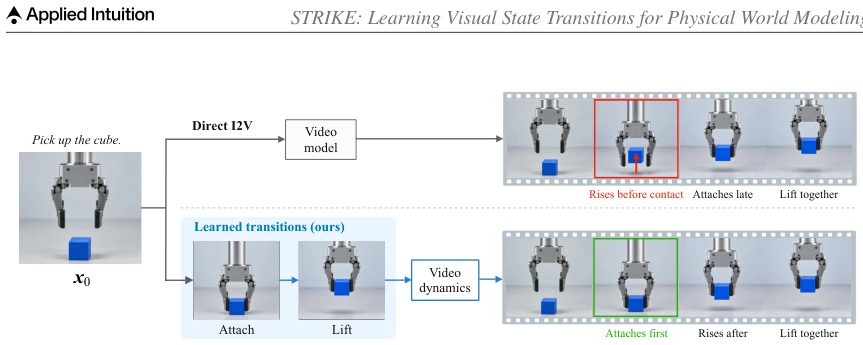
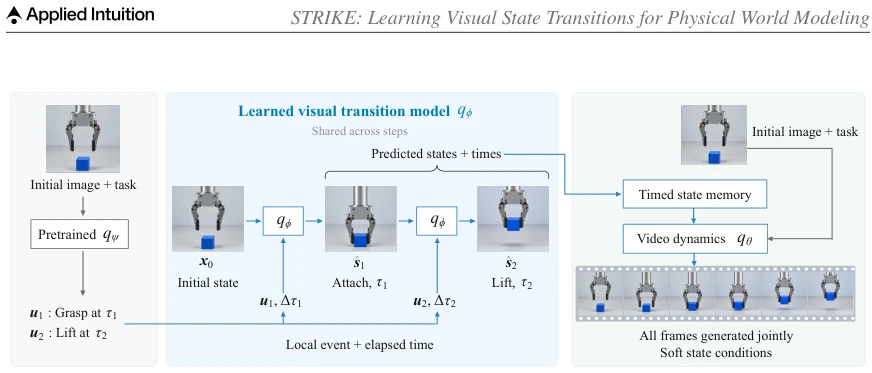
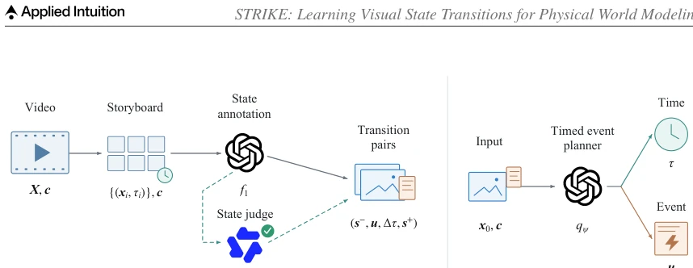
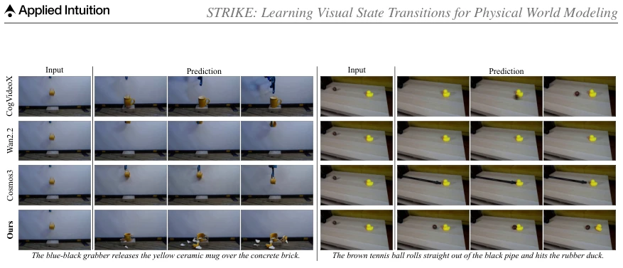
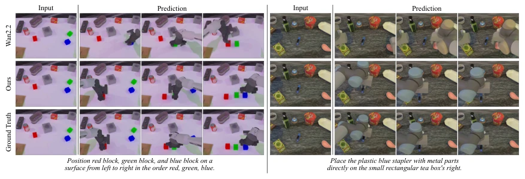
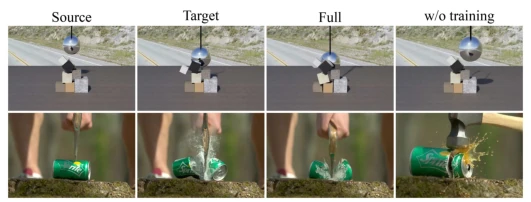
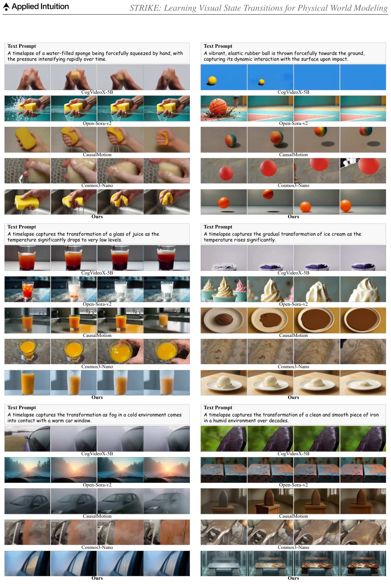

STRIKE attempts to address the persistent issue of physical hallucinations in video generation models using a "step-by-step" strategy. It decomposes video generation into two steps: "predicting key states" and "filling dynamics", equivalent to hiring a physics teacher for the video model. Although physical consistency has indeed improved, the reasoning chain becomes longer, relying on VLM planning, equivalent to outsourcing physical reasoning to another black box. If the planning is wrong, no matter how well the subsequent generation is, it is in vain. However, for scenarios like embodied intelligence that require high physical feedback, this "keyframe + interpolation" approach is indeed more reliable than end-to-end blind guessing.
研究动机Motivation
物理世界建模的核心难点在于预测交互后果，而不仅仅是生成连贯运动。现有的视频生成模型如 CogVideoX [43] 和 Wan [34] 虽然能生成高质量视频，但在物理一致性上表现不佳，常出现物体穿透、接触关系错误等问题。之前的工作如 CausalMotion [48] 尝试用关键帧引导，但缺乏对状态转换的显式学习。STRIKE 指出，仅保持物体外观一致不够，必须建立交互转换关系。这直接针对了物理 AI 中“生成即幻觉”的痛点，试图通过显式学习视觉状态转换来约束视频演化，确保交互结果符合物理常识。
The core difficulty in modeling the physical world lies in predicting interaction consequences, not merely generating coherent motion. Existing video generation models such as CogVideoX [43] and Wan [34] can generate high-quality videos, but perform poorly in physical consistency, often exhibiting problems such as object penetration and incorrect contact relationships. Previous work such as CausalMotion [48] attempted to use keyframes for guidance, but lacked explicit learning of state transitions. STRIKE points out that merely maintaining object appearance consistency is insufficient; interaction transition relationships must be established. This directly targets the pain point of "generation is hallucination" in physical AI, attempting to constrain video evolution through explicit learning of visual state transitions to ensure interaction results conform to physical common sense.

Fig. 1. Overview. Given an initial image and task, STRIKE uses a timed event plan to recursively predict future visual states with a transition model learned from event-aligned state pairs. The predicted states and their temporal positions are applied as conditions of dense video generation.
The framework is divided into four parts: data construction, state transition model, event planning, and dynamic generation. First, VLM-assisted annotation of training videos is used to extract event-aligned state pairs (s-, u, Δτ, s+), constructing supervised data. Second, a visual state transition model is trained to predict the next state based on the current image, interaction description, and time interval, using RoPE to encode relative time. During inference, a pre-trained VLM serves as an event planner, generating event sequences and times based on the initial image and task. Finally, the predicted states and their time positions are used as soft conditions, input into a video dynamic model (such as CogVideoX or Wan) to generate the complete video. The innovation lies in decoupling state prediction from video generation, and mitigating autoregressive error accumulation through the first-frame Sink mechanism.

Fig. 2. The overall framework of STRIKE. (a) A pretrained vision-language event planner receives the initial image 𝒙0 and task 𝒄, and proposes local events 𝒖𝑘and outcome times 𝜏𝑘. (b) A shared visual transition model 𝑞𝜙is applied successively using the current state, event, and elapsed time Δ𝜏𝑘= 𝜏𝑘−𝜏𝑘−1. Observed event-aligned state pairs supervise its training. (c) A separately trained dynamics model 𝑞𝜃generates the dense rollout from the initial context and soft conditions supplied by the predicted states and their temporal locations.

Fig. 3. Data annotation and timed event planning. (a) A training video 𝑿and caption 𝒄are converted into a time-labeled storyboard. GPT-5.5 [25] (𝑓1) selects visual states and annotates their transitions. A Qwen3- VL state judge (𝑓2) checks image–description agreement, with the dashed branch indicating source-specific filtering. Selected video frames and their annotations form transition pairs (𝒔−, 𝒖, Δ𝜏, 𝒔+). (b) During inference, the event planner 𝑞𝜓receives an initial image 𝒙0 and task context 𝒄, and jointly predicts transition specifications 𝒖and their target times 𝜏, without observing future reference frames.
Tested on four benchmarks: Physics-IQ Verified, PhyGenBench, Pisa-Experiments, and RoboTwin2.0. Compared to CogVideoX-5B and Wan2.2-5B baselines, STRIKE shows significant improvement in physical consistency metrics (such as S-IoU, WS-IoU), for example, Physics-IQ improved by 11.4 points. On RoboTwin2, the trajectory score improved by 43.7%. Ablation studies indicate that removing the first-frame anchor or time condition leads to performance degradation, proving that explicit state and temporal information are crucial for physical modeling. Although extra costs are introduced, the improvement in physical fidelity proves the effectiveness of the intermediate state representation.

Fig. 4. Qualitative comparisons on Physics-IQ Verified. Visualizations of four time-aligned frames base- lines and STRIKE, which depicts mug fracture after impact with a concrete brick (left) and duck displacement following contact with a rolling brown ball (right).

Fig. 5. Qualitative comparisons on RoboTwin2.0. Visualizations of Wan2.2 [35] and STRIKE in compari- son against the ground truth.

Fig. 6. Qualitative comparison between our trained transition model and the pretrained Qwen Image Edit.
其他图片Other Figures

Fig. 7. Qualitative comparisons on PhyGenBench. Each block shows the text prompt and four frames from CogVideoX-5B, Open-Sora-v2, CausalMotion, Cosmos3-Nano, and our method.